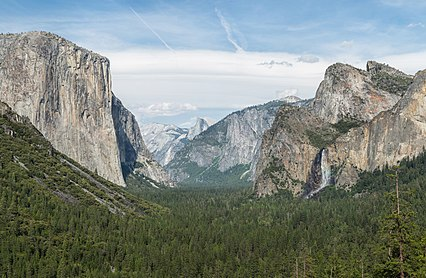

North America is a continent in the Northern Hemisphere and almost entirely within the Western Hemisphere. It can also be described as the northern subcontinent of a single continent, America. It is bordered to the north by the Arctic Ocean, to the east by the Atlantic Ocean, to the southeast by South America and the Caribbean Sea, and to the west and south by the Pacific Ocean. Because it is on the North American Tectonic Plate, Greenland is included as part of North America geographically.
North America covers an area of about 24,709,000 square kilometers (9,540,000 square miles), about 16.5% of the Earth's land area and about 4.8% of its total surface. North America is the third-largest continent by area, following Asia and Africa, and the fourth by population after Asia, Africa, and Europe. In 2013, its population was estimated at nearly 579 million people in 23 independent states, or about 7.5% of the world's population.
North America was reached by its first human populations during the last glacial period, via crossing the Bering land bridge approximately 40,000 to 17,000 years ago. The so-called Paleo-Indian period is taken to have lasted until about 10,000 years ago (the beginning of the Archaic or Meso-Indian period). The classic stage spans roughly the 6th to 13th centuries. The pre-Columbian era ended in 1492, with the beginning of the transatlantic migrations of European settlers during the Age of Discovery and the early modern period. However, the first recorded European references to North America (other than Greenland) are around 1000 AD in Norse sagas in which it is referred to as Vinland. Present-day cultural and ethnic patterns reflect interactions between European colonists, indigenous peoples, African slaves, immigrants from Europe, Asia, and South Asia, and the descendants of these groups.
Owing to Europe's colonization of the Americas, most North Americans speak European languages such as English, Spanish or French, and their cultures commonly reflect Western traditions. However, in parts of Canada, the United States, Mexico, and Central America, there are indigenous populations continuing their cultural traditions and speaking their own languages.
North America wonders
Niagara Falls
Niagara Falls /naɪˈæɡrə, naɪˈæɡərə/ is a group of three waterfalls at the southern end of Niagara Gorge, spanning the border between the province of Ontario in Canada and the state of New York in the United States. The largest of the three is Horseshoe Falls, also known as Canadian Falls, which straddles the international border of the two countries.[1] The smaller American Falls and Bridal Veil Falls lie within the United States. Bridal Veil Falls is separated from Horseshoe Falls by Goat Island and from American Falls by Luna Island, with both islands situated in New York.
Flowing north as part of the Niagara River, which drains Lake Erie into Lake Ontario, the combined falls have the highest flow rate of any waterfall in North America that has a vertical drop of more than 50 m (160 ft). During peak daytime tourist hours, more than 168,000 m3 (six million cubic feet) of water goes over the crest of the falls every minute.[2] Horseshoe Falls is the most powerful waterfall in North America, as measured by flow rate.[3] Niagara Falls is famed for its beauty and is a valuable source of hydroelectric power. Balancing recreational, commercial, and industrial uses has been a challenge for the stewards of the falls since the 19th century.
Niagara Falls is located 27 km (17 mi) north-northwest of Buffalo, New York, and 121 km (75 mi) south-southeast of Toronto, between the twin cities of Niagara Falls, Ontario, and Niagara Falls, New York. Niagara Falls was formed when glaciers receded at the end of the Wisconsin glaciation (the last ice age), and water from the newly formed Great Lakes carved a path over and through the Niagara Escarpment en route to the Atlantic Ocean.
Redwood National and State Parks
The Redwood National and State Parks (RNSP) are a complex of several state and national parks located in the United States, along the coast of northern California. Comprising Redwood National Park (established 1968) and California's Del Norte Coast, Jedediah Smith, and Prairie Creek Redwoods State Parks (dating from the 1920s), the combined RNSP contain 139,000 acres (560 km2),[1] and feature old-growth temperate rainforests. Located within Del Norte and Humboldt Counties, the four parks, together, protect 45 percent of all remaining coast redwood (Sequoia sempervirens) old-growth forests, totaling at least 38,982 acres (157.75 km2). These trees are the tallest, among the oldest, and one of the most massive tree species on Earth. In addition to the redwood forests, the parks preserve other indigenous flora, fauna, grassland prairie, cultural resources, portions of rivers and other streams, and 37 miles (60 km) of pristine coastline.
Grand Canyon
The Grand Canyon (Hopi: Öngtupqa,[2] Yavapai: Wi:kaʼi:la, Navajo: Bidááʼ Haʼaztʼiʼ Tsékooh,[3][4] Spanish: Gran Cañón) is a steep-sided canyon carved by the Colorado River in Arizona, United States. The Grand Canyon is 277 miles (446 km) long, up to 18 miles (29 km) wide and attains a depth of over a mile (6,093 feet or 1,857 meters).[5]
The canyon and adjacent rim are contained within Grand Canyon National Park, the Kaibab National Forest, Grand Canyon–Parashant National Monument, the Hualapai Indian Reservation, the Havasupai Indian Reservation and the Navajo Nation. President Theodore Roosevelt was a major proponent of the preservation of the Grand Canyon area and visited it on numerous occasions to hunt and enjoy the scenery.
Nearly two billion years of Earth's geological history have been exposed as the Colorado River and its tributaries cut their channels through layer after layer of rock while the Colorado Plateau was uplifted.[6] While some aspects about the history of incision of the canyon are debated by geologists,[7] several recent studies support the hypothesis that the Colorado River established its course through the area about 5 to 6 million years ago.[1][8][9] Since that time, the Colorado River has driven the down-cutting of the tributaries and retreat of the cliffs, simultaneously deepening and widening the canyon.

Yosemite National Park
Yosemite National Park (/joʊˈsɛm.ɪ.ti/ yoh-SEM-ih-tee)[4][5] is an American national park in California,[6][7] surrounded on the southeast by Sierra National Forest and on the northwest by Stanislaus National Forest. The park is managed by the National Park Service and covers an area of 759,620 acres (1,187 sq mi; 3,074 km2)[2] and sits in four counties – centered in Tuolumne and Mariposa, extending north and east to Mono and south to Madera County. Designated a World Heritage Site in 1984, Yosemite is internationally recognized for its granite cliffs, waterfalls, clear streams, giant sequoia groves, lakes, mountains, meadows, glaciers, and biological diversity.[8] Almost 95% of the park is designated wilderness.[9]
Yosemite is one of the largest and least fragmented habitat blocks in the Sierra Nevada, and the park supports a diversity of plants and animals. The park has an elevation range from 2,127 to 13,114 feet (648 to 3,997 m) and contains five major vegetation zones: chaparral and oak woodland, lower montane forest, upper montane forest, subalpine zone, and alpine. Of California's 7,000 plant species, approximately 50% occur in the Sierra Nevada and more than 20% are within Yosemite. The park contains suitable habitat for more than 160 rare plants, with rare local geologic formations and unique soils characterizing the restricted ranges many of these plants occupy.[8]
Glacier Bay National Park and Preserve
Glacier Bay National Park and Preserve is an American national park located in Southeast Alaska west of Juneau. President Calvin Coolidge proclaimed the area around Glacier Bay a national monument under the Antiquities Act on February 25, 1925.[4] Subsequent to an expansion of the monument by President Jimmy Carter in 1978, the Alaska National Interest Lands Conservation Act (ANILCA) enlarged the national monument by 523,000 acres (817.2 sq mi; 2,116.5 km2) on December 2, 1980, and created Glacier Bay National Park and Preserve.[5] The national preserve encompasses 58,406 acres (91.3 sq mi; 236.4 km2) of public land to the immediate northwest of the park, protecting a portion of the Alsek River with its fish and wildlife habitats, while allowing sport hunting.
Glacier Bay became part of a binational UNESCO World Heritage Site in 1979, and was inscribed as a Biosphere Reserve in 1986. The National Park Service undertook an obligation to work with Hoonah and Yakutat Tlingit Native American organizations in the management of the protected area in 1994.[6] The park and preserve cover a total of 3,223,384 acres (5,037 sq mi; 13,045 km2), with 2,770,000 acres (4,328 sq mi; 11,210 km2) being designated as a wilderness area.[7]
Arches National Park
Arches National Park is a national park in eastern Utah, United States. The park is adjacent to the Colorado River, 4 miles (6 km) north of Moab, Utah. More than 2,000 natural sandstone arches are located in the park, including the well-known Delicate Arch, as well as a variety of unique geological resources and formations. The park contains the highest density of natural arches in the world.[3][4]
The park consists of 310.31 square kilometres (76,680 acres; 119.81 sq mi; 31,031 ha) of high desert located on the Colorado Plateau.[5] The highest elevation in the park is 5,653 feet (1,723 m) at Elephant Butte, and the lowest elevation is 4,085 feet (1,245 m) at the visitor center. The park receives an average of less than 10 inches (250 mm) of rain annually.
Administered by the National Park Service, the area was originally named a national monument on April 12, 1929, and was redesignated as a national park on November 12, 1971.[6] The park received more than 1.6 million visitors in 2018.
Monument Valley
Monument Valley (Navajo: Tsé Biiʼ Ndzisgaii, pronounced [tsʰépìːʔ ǹtsɪ̀skɑ̀ìː], meaning valley of the rocks) is a region of the Colorado Plateau characterized by a cluster of vast sandstone buttes, the largest reaching 1,000 ft (300 m) above the valley floor.[1] It is located on the Arizona–Utah state line (around 36°59′N 110°6′WCoordinates: 36°59′N 110°6′W), near the Four Corners area. The valley lies within the territory of the Navajo Nation Reservation and is accessible from U.S. Highway 163.
Monument Valley has been featured in many forms of media since the 1930s. Director John Ford used the location for a number of his best-known films and thus, in the words of critic Keith Phipps, "its five square miles [13 square kilometers] have defined what decades of moviegoers think of when they imagine the American West.


 (1).jpeg)